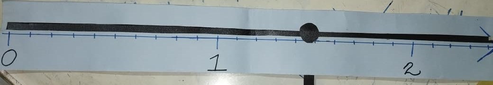

A ribbon-slider number line
A movable token gives decimal tenths a position on a handmade paper line.
Learning goal
Locate a decimal between two whole numbers and explain how the intervals determine its value.
What we did
I made a paper number line with a ribbon slider. I labelled 0, 1 and 2 and marked the smaller intervals so the token could move between whole numbers.
Why I chose this sample
I selected the close-up because it shows the spacing and the width of the token. The photograph documents the teaching aid. It gives no individual student response to score.
How I read the work
To show 1.4, start at 1 and count four intervals of one tenth. The learner should be able to explain why four intervals represent 0.4 and point to the intended tick.
What I would change
The round token covers more than one fine mark. I would add a narrow pointer below it, then ask one learner to position it and a partner to read the value before they compare explanations.
Teaching aid
